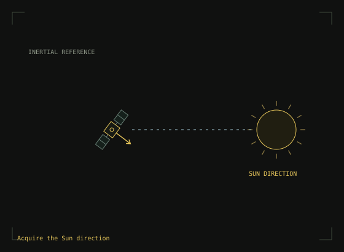
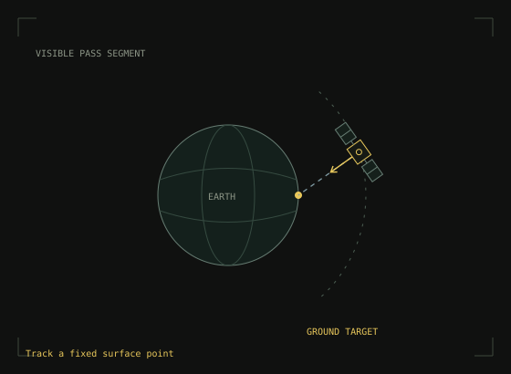
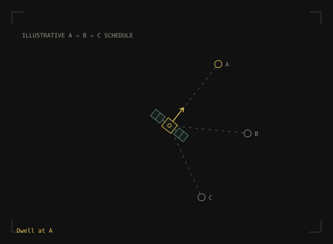
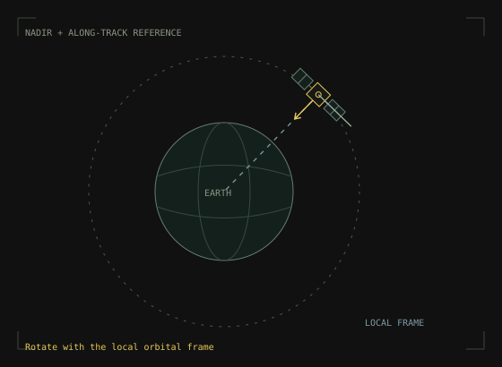

Missions description
Different missions,
different references
The controller follows a desired attitude and rate. Guidance has to build these references from the geometry of each task.
Four reference-behavior sketches. Geometry and timing are illustrative to provide better intuition of the mission.
01 / sun_pointing
Sun pointing
Keep a selected body axis aligned with the Sun direction.
Sun pointing is both a training task and a reference used by the SAFE_SUN mode. It connects attitude control to the practical idea of orienting the spacecraft toward sunlight.
The satellite points to Sun but one direction does not specify the rotation around that direction. Guidance needs an additional convention to complete a three-axis attitude reference.
There is one particular situation: during eclipse, missing Sun information has a geometric explanation. The supervisor should distinguish that expected Sun absence from evidence of a sensor fault.
Code · guidance for this scenario link pending

02 / ground_target
Ground-target tracking
Follow a fixed location on Earth as the spacecraft passes overhead.
The body reference changes throughout the pass even though the surface target stays fixed. A camera boresight, for example body +Z, points from spacecraft position to an Earth-fixed target:
This unit vector points from the spacecraft toward the target. Guidance builds an attitude that aligns the chosen body axis with it. The reference changes throughout the pass.
A pass-centered reset provides useful visible-pass experience for training. Persistent acquisition, tracking and standby phases then manage the mission. Dwell times and hysteresis help prevent small changes near a boundary from making the target chatter.
Code · guidance for this scenario link pending

03 / scheduled_slew
Scheduled slews
Move between a sequence of pointing references, with an accent at each one.
Instead of jumping directly to the next attitude, guidance shapes the transition, limits on reference angular rate and acceleration let the controller follow a planned maneuver.
A continuous interpolation has no sudden jump in orientation, it can still move too quickly or demand more torque than the actuators can provide. Smooth geometry and a trackable maneuver are related, but separate, requirements.
The sketch shows the intended sequence: hold, move, then settle. In an experiment I also check whether settling actually happens before the next maneuver and whether the wheels approach their limits.
Code · guidance for this scenario link pending

04 / nadir_lvlh
Nadir / LVLH
Keep one axis directed toward Earth while following the local orbital frame.
Nadir points toward Earth, the local vertical/local horizontal (LVLH) frame also defines orientation relative to the orbit, including an along-track direction.
This reference rotates as the spacecraft moves around Earth, holding it is different from holding a fixed inertial attitude.
The ground-pass mission can use a nadir/LVLH standby reference outside the tracking phase. Mission logic manages the transition instead of switching targets at every small visibility fluctuation.
Code · guidance for this scenario link pending

Where the geometry comes from
The current example uses an analytical circular orbit at 500 km altitude and 10° inclination. Position and velocity evolve from the configured orbital phase and orientation. The environment also supplies Earth rotation, a simplified magnetic field and a Sun direction.
The inertial frame is the common reference for orbital positions and directions. The body frame rotates with the spacecraft. The estimated attitude provides the rotation between them, so an inertial target direction can be expressed in body coordinates for control, while the spacecraft orientation that is estimated
These tasks need their own geometry: a ground target depends on relative position, LVLH on orbital position and velocity, and Sun pointing on the Sun direction. The simulator supplies this context to guidance, calculating it by a complete onboard navigation filter is outside of the scope of the project.
Code · orbit and geometric context
Code · persistent mission phases
See the experiment evidence ↗How guidance connects to control ↗